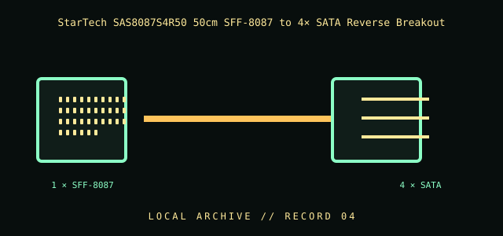

[ INDIVIDUAL COMPONENT // CABLES & ADAPTERS ]
StarTech SAS8087S4R50 50cm SFF-8087 to 4× SATA Reverse Breakout
A reverse-breakout harness with one internal Mini-SAS SFF-8087 connector and four SATA connectors. StarTech identifies this exact model as a reverse cable; connect only to host and backplane ports whose manuals specify this cable direction.

IDENTIFICATION / SAFETY: Match the complete part number, connector direction, host requirements, and revision to manufacturer documentation. A matching connector shape is not proof of protocol or electrical compatibility.
Specifications
| Catalog subcategory | Data, peripheral, and high-speed cables |
|---|---|
| Catalog identity | StarTech.com SAS8087S4R50 50cm Mini-SAS SFF-8087 to four SATA reverse breakout cable |
| Protocol / standard | 50 cm; one SFF-8087 connector to four SATA connectors; manufacturer identifies the cable as reverse and lists SATA III (6 Gbit/s) cabling. The link rate is a cable capability, not a guarantee of the connected host/device mode. |
| Connector ends | SFF-8087 ↔ 4 × SATA; this is the reverse-wired version, not a generic forward fanout cable. |
Compatibility & electrical hazards
Do not substitute this reverse cable for a forward 1 × SFF-8087-to-four-SATA-drive breakout. Verify the SATA host-port and SFF-8087 backplane roles against the exact controller and backplane documentation; the StarTech page uses broad backplane/controller language in addition to the SKU’s reverse-cable designation. Port role and wiring, not connector shape, determine compatibility.
Archival & handling notes
Record the SAS8087S4R50 SKU, 50 cm length, connector-end labels, and which host/backplane ports each leg served. Keep the four branches labeled; inspect latches and contacts and avoid tight bends at the fanout.
For collection records, photograph both connector faces and all labels; record manufacturer, complete SKU, revision, provenance, condition, and the source document used for identification. Do not apply power to an unidentified or damaged cable.
Sources & further reading
- StarTech — SAS8087S4R50 50cm SFF-8087 to 4x SATA Reverse CableManufacturer SKU, cable length, SATA III (6 Gbit/s) listing, and reverse-cable identification.
- SNIA — SFF specificationsSFF connector/interface specification references; use the exact SFF-8087 document revision.
Source values are limited to the linked manufacturer or standards documentation. Features not stated there are intentionally left unspecified; confirm the exact cable revision and host-device manuals before use.